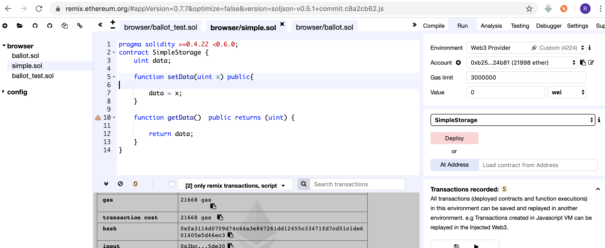

1. Remix开发智能合约¶
1.1. 介绍¶
目前以太坊上支持三种语言编写智能合约，
Solidity：类似JavaScript，这是以太坊官方推荐语言，也是最流行的智能合约语言。具体用法参加Solidity文档，地址：https://solidity.readthedocs.io/en/latest/
本次我们将学习使用 remix-ide 这个编辑器来开发智能合约。 remix-ide 是一个浏览器版的solidity开发 IDE，你可以使用在线版的https://remix.ethereum.org/也可以下载下来 https://github.com/ethereum/remix-ide 安装到本地。 这里我把它安装到了我本地。
1.2. 安装 remix-ide¶
采用npm 安装
npm install remix-ide -g
安装好了执行
remix-ide
就会启动一个8080 的端口，打开浏览器，输入 http://localhost:8080 就可以打开remix编辑器了。
